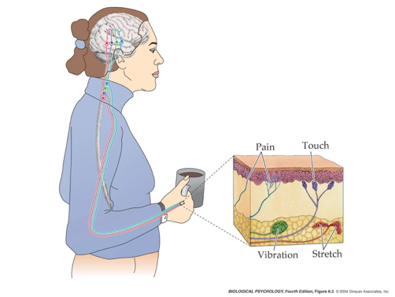
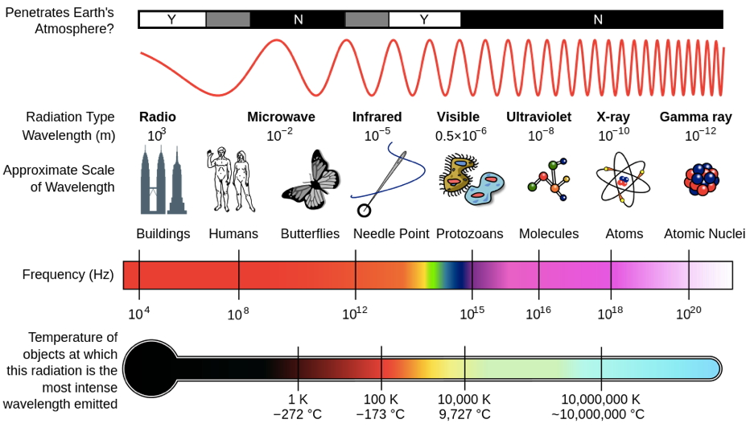
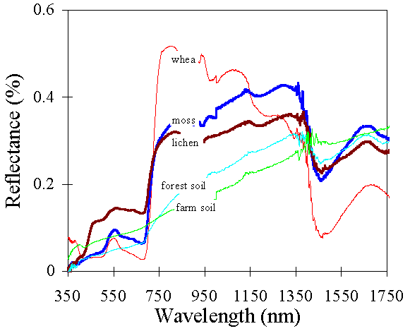
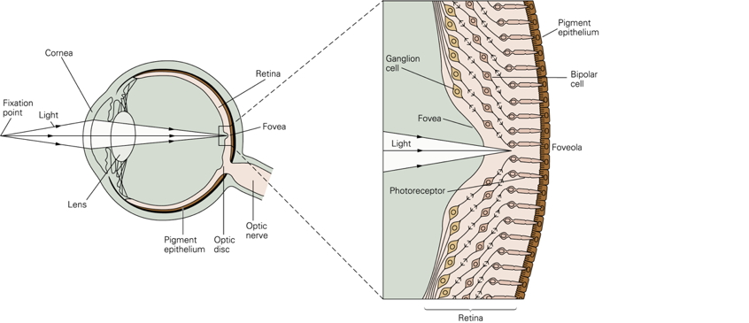
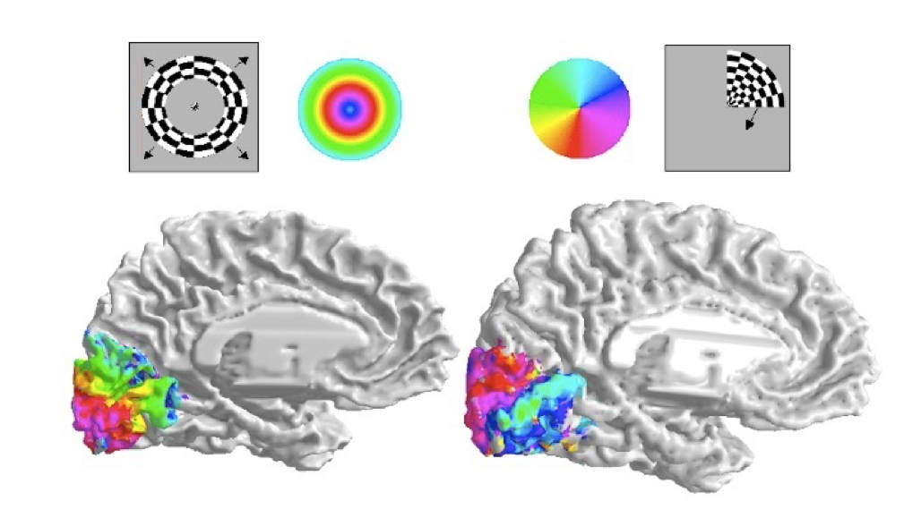

Perception
The big picture
Senses as (perception/action) systems


Smartphone as metaphor
- Accelerometer
- Gyroscope
- Magnetometer
- Proximity sensor
- Ambient light sensor
- Barometer
- Thermometer
- Mic
- Camera
- Radios (Bluetooth, wifi, cellular, GPS)
Perception/action system dimensions
- Interoceptive
- Body position, movement, posture
- Internal status: hunger, thirst, arousal, discomfort/pain, etc.
- Exteroceptive
- Layout of environment, contents
Questions for interoception
- Tired or rested?
- Well or ill?
- Hungry or thirsty or sated?
- Stressed vs. coping?
- Emotional state?
Questions for exteroception
- Who/What is out there?
- Animate/inanimate?
- Conspecific (same species)/non?
- Threat/non?
- Familiar/un?
- Mate/non? or Friend/not?
- Food source/non
- Where is it?
- Distance
- Proximal
- Distal
- Elevation, azimuth
- Coordinate frames
- Self/ego (left of me)
- Object (top of object)
- Allo/world (North of College)
- Distance
- Where moving?
Questions for action
- What kind of response?
- External
- Move body
- Approach/avoid/freeze
- Signal/remain silent
- Manipulate
- Move body
- Internal
- Change physiological state
- External
- Speed, quality, direction of response
Properties of the world
- Behaviorally relevant conditions, events, and entities…
- Generate patterns…
- Chemical
- Photic/electromagnetic
- Mechanical/acoustic
- That specialized sensors detect, and
- Neural circuitry responds to
- That yield internal states (short- and long-term)
- That cause actions
Processing
Physics of sensation
Sorry, Mrs. Potraz, there are more than five senses!
| Informal name | Source |
|---|---|
| Vision | Electromagnetic radiation |
| Audition | Mechanical vibration in air/water |
| Touch | Mechanical vibration of skin on surface |
| Vestibular | Rotation & linear acceleration of head |
| Olfaction | Chemical patterns in air/water |
| Gustation | Chemical patterns in mouth |
| Electroception | Electromagnetic radiation |
| Magnetoreception | Electromagnetic radiation patterns |
| Kinesthesia | Position, velocity, acceleration of limbs, body |
Psychophysics (from physics to psychology)
- What is the energy/chemical channel?
- Channels carry different types of information about
- What is out there?
- Where is it located or moving?
- Convey information at different rates, with varied precision
- Information often signaled by multiple sources
Vision
- Source: Electromagnetic radiation
- Reflected from surfaces
- What is it?
- Shape, size, surface properties (color, texture, reflectance, etc.)
- Wavelength/frequency, intensity
- Where is it?
- Position: Left/right; up/down on retina
- Near/far: retinal disparity, interposition, height above horizon…
- Orientation, motion
Audition
- Source: Mechanical vibrations in air or water
- What is it?
- Pattern of frequencies, amplitudes, durations
- Where is it?
- Left/right or up/down: Interaural time/phase, intensity differences, pinnae filtering
- Motion: Frequency shifts via Doppler effect
Chemosensation
- Source: Chemicals in mouth, nasal cavity
- What is it?
- Mixtures of chemicals
- Where is it?
- Left/right; up/down; near/far via intensity gradients
Somatosensation
- Source: Thermal or mechanical stimulation (vibration/pressure) of skin
- What is it?
- Shape, size, smoothness, mass, temperature, deformability: Pattern of stimulation
- Where it it?
- Pattern of cutaneous receptors on skin
Interoception
- Hunger/thirst
- Receptors for nutrient, fluid levels
- Energy levels
- Receptors for hormones, NTs
- ANS responses
- Temperature
- Receptors in skin, viscera
- Mating interest
- Receptors for hormones, NTs
- ANS responses
- Body position & movement (proprioception)
- Receptors in muscles, joints, skin

Features of sensory signals
Change across time
- Tonic (sustained) vs. phasic (transient) responses

- Adaptation
- Decline in sensitivity with sustained stimulation
- Most sensory systems attuned to change
- Just noticeable difference (JND): How much of a change is noticeable?
- Most psychophysical functions are non-linear
- JND a function of absolute intensity!

- Information propagates in CNS at different speeds
- Bigger diameter: Faster
- Denser myelin: Faster
Consist of repeating signals (e.g. patterns)
- In space (textures)
- In time
Vision: Spatial frequency/contrast sensitivity

Audition: Frequencies in sound

Somatosensation: Textures

Compare (>1) sensors located in different parts of the body
- Eyes
- Ears
- Skin surface
- Nostrils
- Tongue

“Receptive fields”
- Area on sensory surface (e.g., retina, skin) that when stimulated changes neuron’s firing
Tactile
 ##### Visual
##### Visual


Topographic maps
Auditory: Tonotopic maps

Visual: Retinotopic maps

Somatosensory: Somatotopic maps in S1 & M1

Sensivity non-uniform
Two-point touch thresholds

Somatosensory homunculus

Visual acuity non-uniform

Hearing thresholds non-uniform

Hierarchical/sequential AND parallel



Feedforward and feedback
Case study: Vision
Animals respond to visual illusions, too

A cat responds…


Properties of Electromagnetic (EM) radiation

- Wavelength/frequency
- Intensity
- Location/position of source
- Reflects off some materials
- Refracted (bent) moving through other materials
- Information across space (and time)

- Light provides fast (2.99 million m/s; 186 million mi/hr) information about surfaces at a distance
- vs. sound (340 m/s; 767 mi/hr)
- vs. chemical signals (min/mi)
Reflectance spectra differ by surface


Optic array specifies geometry of environment

Categories of wavelength specify perception of color
- Eyes categorize wavelength into relative intensities within wavelength bands
- RGB ~ Red, Green, Blue
- Long, medium, short wavelengths
- Color is a neural/psychological construct

The biological camera


part of a self-stabilizing system…
Parts of the eye
- Cornea - refraction (2/3 of total)
- Pupil - light intensity; diameter regulated by Iris.
- Lens - refraction (remaining 1/3; focus)
- Retina - light detection
- ~ skin or organ of Corti in inner ear
- Pigment epithelium - regenerate photopigment
- Muscles - move eye, reshape lens, change pupil diameter
Geometry of retinal image
- Image inverted (up/down)
- Image reversed (left/right)
- Point-to-point map (retinotopic)
- Binocular and monocular zones


The fovea

- Central 1-2 deg of visual field
- Aligned with visual axis
- Retinal ganglion cells pushed aside
- Highest acuity vision == best for details
- Acuity varies from center to periphery


What part of the skin is like the fovea?
Photoreceptors in retina detect light

- Rods
- ~120 M/eye
- Mostly in periphery
- Active in low light conditions
- One wavelength range
- Cones
- ~5 M/eye
- Mostly in center
- 3 wavelength ranges


Photoreceptor physiology
- Outer segment
- Membrane disks
- Photopigments
- Sense light, trigger chemical cascade
- Inner segment
- Synaptic terminal
- Light hyperpolarizes photoreceptor!
- The dark current
Retina
- Physiologically backwards
- Dark current
- Anatomically inside-out
- Photoreceptors at back of eye

- Information flows…
- From photoreceptors…
- To Bipolar cells
- <-> and Horizontal cells
- To Retinal ganglion cells
- <-> and Amacrine cells
- To cerebral cortex
Center-surround receptive fields

- Center region
- Excites (or inhibits)
- Surround region
- Does the opposite
- Bipolar cells & Retinal Ganglion cells ->
- Most activated by “donuts” of light/dark
- Local contrast (light/dark differences)
Opponent processing
- Black (darker) vs. white (lighter) (achromatic)
- Long (red) vs. Medium (green) wavelength cones
- (Long + Medium) vs. Short cones
- Can’t really see reddish-green or bluish-yellow
- “Oppose” one another at cellular/circuit level
- DEMO
From eye to brain

- Retinal ganglion cells
- 2nd/II cranial (optic) nerve
- Optic chiasm (\(\chi\) - asm): Partial crossing of fibers
- Nasal hemiretina (lateral/peripheral visual field) cross
- Left visual field (from L & R retinae) -> right hemisphere & vice versa
- Lateral Geniculate Nucleus (LGN) of thalamus (receives 90% of retinal projections)
- Hypothalamus
- Suprachiasmatic nucleus (superior to the optic chiasm): Synchronizes day/night cycle with circadian rhythms
- Superior colliculus & brainstem
LGN

- 6 layers + intralaminar zone
- Parvocellular (small cells): chromatic
- Magnocellular (big cells): achromatic
- Koniocellular (chromatic - short wavelength?)
- Retinotopic map of opposite visual field
From LGN to V1
- Via optic radiations
- Primary visual cortex (V1) in occipital lobe
- Create “stria of Gennari” (visible stripe in layer 4)
- Calcarine fissure (medial occiptal lobe) divides lower/upper visual field
Human V1


- Fovea overrepresented
- Analogous to somatosensation
- High acuity in fovea vs. lower outside it
- Upper visual field/lower (ventral) V1 and vice versa
Laminar, columnar organization

- 6 laminae (layers)
- Input: Layer 4 (remember stria of Gennari?)
- Output: Layers 2-3 (to cortex), 5 (to brainstem), 6 (to LGN)
- Columns
- Orientation/angle
- Spatial frequency
- Color/wavelength
- Eye of origin, ocular dominance

From center-surround receptive fields to line detection


Ocular dominance columns
Beyond V1

- Larger, more complex receptive fields
- Dorsal stream (where/how)
- Toward parietal lobe
- Ventral stream (what)
What is vision for?
- What is it? (form perception)
- Where is it? (space perception)
- How do I get from here to there (action control)
- What time (or time of year) is it?
References
Dougherty, R. F., Koch, V. M., Brewer, A. A., Fischer, B., Modersitzki, J., & Wandell, B. A. (2003). Visual field representations and locations of visual areas V1/2/3 in human visual cortex. Journal of Vision, 3(10), 1–1. https://doi.org/10.1167/3.10.1
Namkung, H., Kim, S.-H., & Sawa, A. (2017). The insula: An underestimated brain area in clinical neuroscience, psychiatry, and neurology. Trends in Neurosciences, 40(4), 200–207. https://doi.org/10.1016/j.tins.2017.02.002
Panichello, M. F., Cheung, O. S., & Bar, M. (2013). Predictive feedback and conscious visual experience. Perception Science, 3, 620. https://doi.org/10.3389/fpsyg.2012.00620
Randeberg, L. (2005). Diagnostic applications of diffuse reflectance spectroscopy. Retrieved from https://www.semanticscholar.org/paper/ec9450b79923e2e2152b54ab9241b60bc5374944
Roark, M. W., & Stringham, J. M. (2019). Visual performance in the “real world”: Contrast sensitivity, visual acuity, and effects of macular carotenoids. Molecular Nutrition & Food Research, 63(15), e1801053. https://doi.org/10.1002/mnfr.201801053
Smith, G. E., Chouinard, P. A., & Byosiere, S.-E. (2021). If I fits I sits: A citizen science investigation into illusory contour susceptibility in domestic cats (felis silvestris catus). Applied Animal Behaviour Science, 240, 105338. https://doi.org/10.1016/j.applanim.2021.105338
Swanson, L. W. (2005). Anatomy of the soul as reflected in the cerebral hemispheres: Neural circuits underlying voluntary control of basic motivated behaviors. Journal of Comparative Neurology, 493(1), 122–131. https://doi.org/10.1002/cne.20733
Swanson, L. W. (2012). Brain architecture: Understanding the basic plan. Oxford University Press.